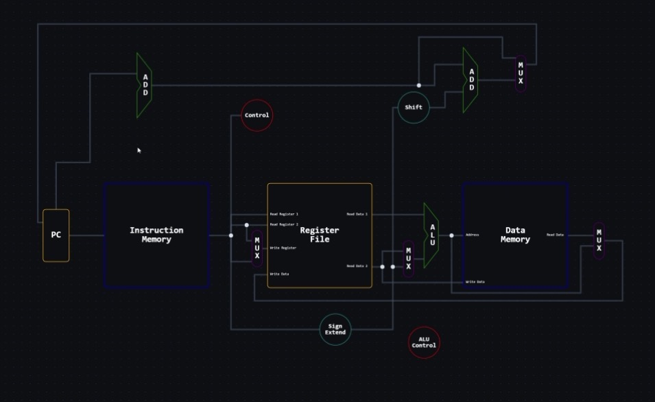

Learn how CPU datapaths work through interactive simulation and guided exploration.
Step through instructions and see signals flow in real time.
Understand each component with guided explanations.
Test your knowledge with challenges.
Explore the core components of a CPU datapath. Each block plays a role in how instructions are executed and how data flows through the processor. You can explore and learn what each component does with the program and what it can do as the data flows.
Stores the address of the next instruction. It updates every cycle to keep execution moving.
Holds the program instructions. The PC provides an address to fetch the current instruction.
A small, fast storage unit that holds temporary values used during execution.
Stores data for load and store instructions, allowing the CPU to read and write memory.
Performs arithmetic and logical operations such as addition, subtraction, and comparison.
Selects one input from multiple options based on a control signal.
Adds values together. Often used to increment the PC or calculate addresses.
Generates control signals that determine how each part of the datapath behaves.
Shifts bits to the left (usually by 2) to align addresses for branching.
Expands a smaller signed value to a larger size while preserving its sign.
Determines the specific operation the ALU should perform based on the instruction.
Reads data from memory and stores it into a register.
Writes data from a register into memory.
Changes execution flow based on a condition, such as equality.
Unconditionally moves execution to a new instruction address.
Adds two values together for arithmetic or address calculation.
Subtracts one value from another, often used for comparisons.
The Datapath Visualizer is a conceptual learning tool that demonstrates how a CPU processes instructions through a datapath. It focuses on visualizing how data moves between key components such as the PC, Instruction Memory, Register File, ALU, and Memory in a simplified but structured flow.

Frontend Developer • DevOps
UI/UX • Datapath Research
UI/UX • Datapath Research